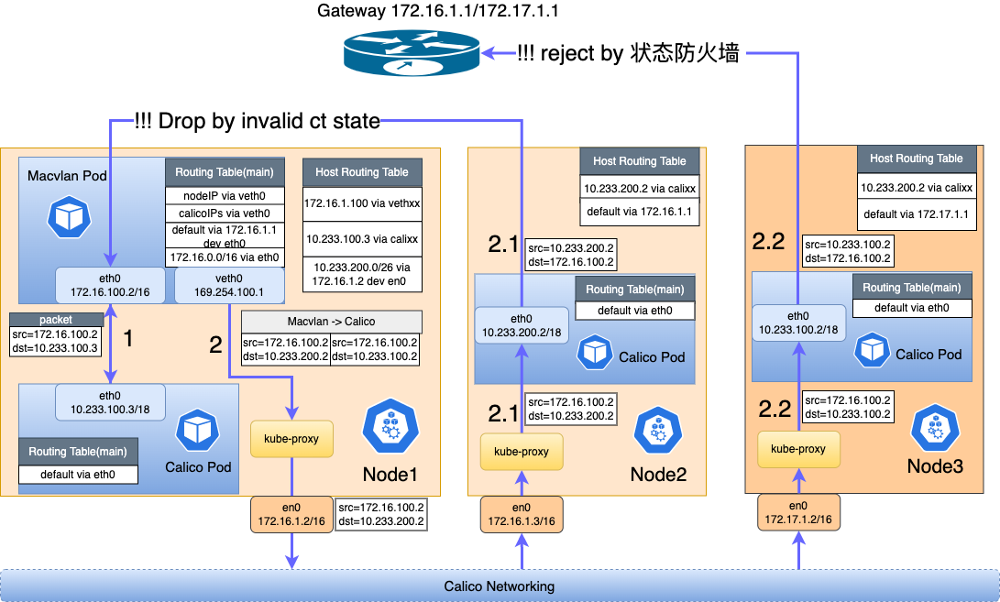

Calico + Macvlan 多 CNI 数据转发流程
简体中文 | English
背景
CNI 作为 Kubernetes 的集群中重要的组件。一般情况下，都会部署一个 CNI(比如 Calico)，由它负责集群网络的连通性。有些时候一些终端用户基于性能、安全等的考虑，会在集群中使用多种类型的 CNI，比如 Underlay 类型的 Macvlan CNI。此时一个集群就可能存在多种 CNI 类型的 Pod，不同类型的 Pod 分别适用于不同的场景：
- 单 Calico 网卡的 Pod: 如 CoreDNS 等系统组件，没有固定 IP 的需求，也不需要南北向流量通信，只存在集群东西向流量通信的需求。
- 单 Macvlan 网卡的 Pod: 适用于对性能，安全有特殊要求的应用，或需要以 Pod IP 直接南北向流量通信的传统上云应用。
- Calico 和 Macvlan 网卡的多网卡 Pod：同时兼顾上面二者的需求。既需要以固定的 Pod IP 访问集群南北向流量，又需要访问集群东西向流量(比如和 Calico Pod 或 Service)。
另外，当多 CNI 的 Pod 存在于一个集群，实际上这个集群存在两种不同的数据转发方案: Underlay 和 Overlay。这可能会导致一些其他问题:
- 使用 Underlay 网络的 Pod 无法与集群中使用 Overlay 网络的 Pod 直接通信: 由于转发路径不一致，Overlay 网络常常需要经过节点作二次转发，但 Underlay 一般直接通过底层网关转发。所以当二者互相访问时，可能由于底层交换机未同步集群子网的路由导致丢包
- 双 CNI 可能会增加使用和运维复杂度，比如 IP 地址管理等
Spiderpool 这一套完整的 Underlay 网络解决方案可以解决当集群存在多种 CNI 时的互联互通问题，又可以减轻 IP 地址运维负担。下面我们将以 Calico 和 Macvlan 为例，介绍它们之间的数据转发流程。
快速开始
- Calico + Macvlan 多网卡快速开始可参考 get-stared-calico
- 单 Macvlan 网卡可参考 get-started-macvlan
- Underlay CNI 访问 Service 可参考 underlay_cni_service
不同场景数据转发流程
- Calico+Macvlan 多网卡 Pod 分别访问 Calico 和 Macvlan Pod
- Calico+macvlan 多网卡 Pod 访问 Service
- 访问 Calico-Macvlan 多网卡 Pod 的 NodePort
下面介绍几种典型的通信场景:
Macvlan Pod 之间互相访问数据转发过程

Macvlan 访问同子网 Pod
如 图1 标号2，Macvlan Pod1(172.16.1.3) 通过 Macvlan Bridge 模式机制直接访问 Macvlan Pod2(172.16.1.2), 不管是否为同节点还是不同节点，都不需要经过网关转发。
Macvlan 访问不同子网的 Pod
如 图1 标号1, Macvlan Pod1(172.16.1.2) 访问跨网段跨节点的 Macvlan Pod2(172.16.2.100) 或访问跨网段但同节点的 Macvlan Pod3(172.17.1.100)。由于是不同网段，都需要经过网关转发。
Macvlan Pod 访问 本地节点
如 图1 标号3: 由于 Macvlan bridge 机制，Macvlan 子接口不能直接跟 Master 接口通信。所以我们在 Macvlan Pod(如 172.17.1.100) 创建了一个 veth 网卡，并在 Pod 和节点分别设置路由，解决不能通信的问题。节点(172.17.1.1)访问 Macvlan Pod（172.17.1.100） 根据节点 table500 中的路由，从 vethxxx 发转发到 Pod 的网络命名空间。
# pod network namespace
~# ip r
172.17.1.1 dev veth0
# host network namespace
~# ip r show table 500
172.17.1.100 dev vethxxx
Macvlan Pod 访问 Macvlan Pod 的 Service
访问 ClusterIP(如 图2黑色线所示):
-
Macvlan Pod（172.17.1.100）访问 ClusterIP（10.233.0.100）的数据包匹配 Pod 内部路由，通过 veth0 网卡转发到节点
# pod network namespace ~# ip r 10.233.0.0/18 dev veth0 -
经过节点 Kube-proxy 设置的 Service DNAT 规则，将 ClusterIP（10.233.0.100）解析为目标 Macvlan Pod（172.17.1.200）, 经过节点间的网络将数据包转发到 172.17.1.200。此时数据包的源地址已被 SNAT 为节点IP：172.17.1.1。
- 到达节点 Node2（172.17.1.2），通过主机上 table500 的路由表，将数据包通过 vethxx 转发到目标 Pod（172.17.1.200）。
- 目标 Pod（172.17.1.200）发出响应报文时，其目标地址是节点 Node1 的地址：172.17.1.1, 所以响应报文从 veth0 发出，经过节点网络发送回 Node1 节点。经过 Node1 节点上 Kube-proxy 的 iptables 规则，将源地址还原为 ClusterIP (10.233.0.100), 目标地址还原为 Macvlan Pod（172.17.1.100）。
- 经过主机上设置的 table500 路由表，将响应报文通过 vethxx 网卡转发到源 Pod（172.17.1.100），整个访问过程结束。
访问 NodePort Service(如 图2 红色线所示)
重点介绍 NodePort Service 配置 ExternalTrafficPolicy=Local 的场景.
- 集群外一个客户端：1.1.1.1 访问 NodePort: 172.17.1.1:32456。 数据包首先通过外部路由到达节点 Node1(172.17.1.1)。
- 经过主机上 Kube-proxy 设置的 iptables DNAT 规则, 将目标地址改写为 Macvlan Pod(172.17.1.100), 经过主机上 table500 的路由表，将数据包通过 vethxx 转发到目标 Pod。
-
当 Pod 发出响应报文时，看到的目标地址是 1.1.1.1，将会匹配到 Pod 的默认路由，则从 eth0 转发出去，导致访问不通。Spiderpool 通过在 Pod 的网络命名空间设置以下的 iptables 规则和策略路由，使 veth0 接收的 NodePort 流量仍然从 veth0 转发到节点上。
# pod network namespace iptables -i veth0 --set-xmark 0x1 ... ~# ip rule from all fwmark 0x1 lookup 100 ~# ip r show table 100 default dev veth0 -
经过节点上的网络协议栈，将数据包的源地址改为节点的 IP(172.17.1.1)，再通过集群外的路由，将数据包发送至客户端(1.1.1.1),整个访问结束。
Macvlan 访问 Calico 的 Pod

主要分为以下三种情况：
Macvlan Pod 访问同节点的 Calico Pod(如 图3的线路1):
- Macvlan Pod（172.16.100.2）访问 Calico Pod（10.233.100.3/18），数据包匹配 Pod 中路由(
10.233.64.0/18 via veth0), 将数据包从 veth0 网卡转发到节点上。 - 数据包匹配节点上： Calico 的虚拟路由(
10.233.100.3 dev calixxx) 将数据包通过 Calico 虚拟网卡转发到 Calico Pod(10.233.100.3)。 - 响应报文通过 Calico 虚拟网卡(calixxx)发送到节点上，由于目标地址为 Macvlan Pod(172.16.100.2)，匹配路由(
172.16.100.2 dev vethxxx table 500) 转发到 Macvlan Pod，整个访问结束。
Macvlan Pod 跨节点访问 Calico Pod(节点同网段，如图三中：2->2.1):
- Macvlan Pod（172.16.100.2）访问 Calico Pod（10.233.200.2/18），数据包匹配 Pod 中路由(
10.233.64.0/18 via veth0), 将数据包从 veth0 网卡转发到节点上。 - 经过节点之间的 Calico 路由，将数据包转发到对端节点(172.16.1.3)。由于目的地址是: 10.233.200.2, 匹配到节点的 Calico 路由(
10.233.100.2 dev calixxx) 将数据包通过 Calico 虚拟网卡转发到 Calico Pod(10.233.100.2)。 - 由于数据包最原始的源地址为 Macvlan Pod(172.16.100.2), 所以 Calico Pod 会将响应报文先转发到本节点(172.16.1.3)上，然后将响应报文直接转发到 Macvlan Pod(172.16.100.2),而不会经过节点转发，导致了数据包来回转发路径不一致，可能会被内核认为其数据包的 conntrack 的 state 为 invalid，会被 kube-proxy 的一条 iptables 规则丢弃:
~# iptables-save -t filter | grep '--ctstate INVALID -j DROP' iptables -A FORWARD -m conntrack --ctstate INVALID -j DROP
该规则原是为了解决 #Issue74839 提出的问题，因为 某些 tcp 报文大小超出窗口限制，导致被内核标记其 conntrack 的 state 为 invalid，从而导致整个 tcp 链接被 reset。于是 k8s 社区通过下发这条规则来解决这个问题，但这条规则可能会影响此场景中数据包来回不一致的情况。如社区有相关的 issue 报告：#Issue117924, #Issue94861,#Issue177等。
我们通过推动社区修复此了问题，最终在 only drop invalid cstate packets if non liberal 得到解决，kubernetes 版本为 v1.29。我们需要确保设置每个节点的 sysctl 参数: sysctl -w net.netfilter.nf_conntrack_tcp_be_liberal=1，并且重启 Kube-proxy，这样 kube-proxy 就不会下发这条 drop 规则，也就不会影响到单 Macvlan pod 与单 Calico pod 之间的通信。
执行完毕后，检查节点是否还存在这条 drop 规则，如果没有输出说明正常。否则请检查 sysctl 是否正确设置以及是否重启 kube-proxy。
~# iptables-save -t filter | grep '--ctstate INVALID -j DROP'
注意： 必须确保 k8s 版本大于 v1.29。如果您的 k8s 版本小于 v1.29, 该问题无法规避。
Macvlan Pod 访问 Calico Pod 的 Service

-
Macvlan Pod(172.16.100.2) 插入一条 劫持 service 流量的路由, 使 Pod 访问 ClusterIP(10.233.0.100) 的时候，数据包通过 veth0 网卡转发到节点 Node1(172.16.1.2)。
～# ip r 10.233.0.0/18 via 10.7.168.71 dev eth0 src 10.233.100.2 -
当数据包转发到节点 Node1(172.16.1.2) 之后，经过主机网络协议栈的 kube-proxy 将 clusterip 转换为 Calico Pod 的 IP：10.233.200.2。 随后通过 Calico 设置的隧道路由转发到节点 Node2(172.16.1.3)。注意当请求数据包从节点 node3 发出时，其源地址会被 SNAT 为的节点 Node1 的 IP(172.16.1.2)。这确保回复数据包能够原路返回，而不会出现 Macvlan Pod 访问 Calico Pod 可能出现来回路径不一致的问题。这样请求数据包转发到主机 Node2 后，通过节点上 calixxx 虚拟网卡转发到了 Calico Pod（10.233.200.2）。
-
Calico Pod（10.233.200.2）将回复报文转发到节点 Node2。此时回复数据包的目标地址为节点 Node1(172.16.1.2)，所以通过节点路由转发到 Node1。随后通过 Kube-proxy 将目标地址改写为 Macvlan Pod 的 IP： 172.16.100.2，源地址改为 ClusterIP(10.233.0.100)。随后匹配主机上设置的路由 table500(
172.16.100.2 dev vethxxx table 500)，将数据包发送到 Macvlan Pod, 整个访问结束。
Calico+Macvlan 多网卡的 Pod 分别访问 Calico 和 Macvlan Pod

如 图4 所示：节点 Node1 的 Calico-Macvlan Pod (同时具备 calico 和 macvlan 网卡的 pod，节点 Node2 运行了 Macvlan Pod（只具备 macvlan 的网卡）和 Calico Pod（只具备 calico 的网卡）。
Calico + Macvlan 多网卡 Pod 访问 Calico Pod(如图4红色线段所示):
-
Calico-Macvlan Pod 具备两张网卡，Spiderpool 协调多张网卡的路由，使 Pod 接入 Overlay 和 Underlay 两种网络。
~# # all routing-table of eth0(calico) ~# ip route show table main 172.16.1.2 dev eth0 10.233.64.0/18 dev eth0 172.16.0.0/16 dev net1 default via 169.254.1.1 dev eth0 ~# # all routing-table of net1(macvlan) ~# ip route show table 101 default via 172.16.0.1 dev net1 172.16.0.0/16 dev net1 -
当 Calico-Macvlan Pod 访问 Calico Pod（10.233.100.4），匹配 Pod 的路由(
10.233.64.0/18 dev eth0) 通过 eth0 将数据包发送到节点 Node1(172.16.1.1)，源地址为 Calico 网卡的 IP(10.233.100.3)。由于目标地址为 10.233.100.4，所以会通过节点间的 Calico 网络，将数据包转发到节点 Node2(172.16.1.2)，最终转发到 Calico Pod 中。 - Calico Pod 在发出回复报文时，此时的目标地址是 Calico-Macvlan Pod 的 calico 网卡 ip （10.233.100.3），此过程如 Calico Pod 之间的互相访问一样，通过 Calico 节点路由将回复报文转发到节点 Node1, 然后通过 Calico 的虚拟路由转发到 Calico-Macvlan Pod 中，整个访问结束。
Calico + Macvlan 多网卡 Pod 访问 Macvlan Pod(如图4黑色线段所示):
-
Calico-Macvlan Pod 具备两张网卡，Spiderpool 协调多张网卡的路由，使 Pod 同时接入 Overlay 和 Underlay 两种网络。
~# # all routing-table of eth0(calico) ~# ip route show table main 172.16.1.2 dev eth0 10.233.64.0/18 dev eth0 default via 169.254.1.1 dev eth0 172.16.0.0/16 dev net1 ～# ip route show table 101 ~# # all routing-table of net1(macvlan) ~# ip route show table 101 default via 172.16.0.1 dev net1 172.16.0.0/16 dev net1 -
当 Calico-Macvlan Pod 访问 Macvlan Pod（172.16.100.3），数据包匹配路由(
172.16.0.0/16 dev net1)， 通过 Pod 的 macvlan 网卡net1发送出去。 - 通过 Underlay 网络直接转发到节点 Node2 的 Macvlan Pod（172.16.100.3）
- Macvlan Pod（172.16.100.3）发出回复报文时，由于目标地址是：172.16.100.2，再次通过 Underlay 网络将数据包发送到 Calico-Macvlan Pod中，整个访问结束。
Calico+macvlan 多网卡 Pod 访问 Service

节点 Node1 分别运行 Macvlan Pod（只具备一张 Macvlan 网卡：172.16.100.3）和 Calico Pod（只具备一张 Calico 网卡：10.233.100.4）。
节点 Node2 运行一个 Macvlan-Calico 多网卡 Pod（同时具备一张 Calico 网卡：10.233.100.3 和 一张 Macvlan 网卡：172.16.100.2）
Calico-Macvlan 多网卡 Pod 访问 ClusterIP（endpoint 使用 Calico 网络):
如 图5 的蓝色箭头所示：
- 根据 Pod 中路由，访问 ClusterIP 的流量通过 eth0 转发到节点 Node2 上。随后经过节点上的 kube-proxy 解析其目标 clusterip 地址为 Calico Pod 的 IP: 10.233.100.4, 随后通过 calico 设置的节点路由转发到目标主机 Node1，最后通过 calixxx 虚拟网卡，转发到 Calico Pod 中。
- 回复报文通过 eth0 转发到节点 Node1 上，目标地址为 Calico-Macvlan Pod 的 Calico 网卡 IP： 10.233.100.3，再次通过节点间的 Calico 路由，转发到 Node2。随后 Node2 的 kube-proxy 将源地址改为 clusterip 的地址，随后通过 calixxx 虚拟网卡发送到 Calico-Macvlan Pod 中, 整个访问结束。
Calico-Macvlan 多网卡 Pod 访问 Macvlan Pod 的 ClusterIP：
如 图5 的红色箭头所示：
- 根据 Pod 中路由，访问 ClusterIP 的流量通过 eth0 转发到节点 Node2 上。随后经过节点上的 kube-proxy 解析其目标 clusterip 地址为 Macvlan Pod 的 IP: 172.16.100.3, 随后通过节点间路由，转发到目标主机 Node1。注意：数据包从节点 Node2 发出时，源地址已经被 SNAT 为： 172.16.1.3。
- 报文到达 Node1 后，通过节点上 vethxxx 虚拟网卡，最终转发到 Macvlan Pod 中。
- 发出响应报文时，由于目标地址为 Node2 的 IP，报文通过 eth0 直接转发到 Node2 上。经过 Node2 的 kube-proxy 将源地址改为 clusterip 的地址，目标地址改写 Calico-Macvlan Pod 的 calico ip（10.233.100.3）。最后通过 calixxx 虚拟网卡发送到 Calico-Macvlan Pod 中, 整个访问结束。
访问 Calico+Macvlan 多网卡 Pod 的 NodePort
如 图5 黑色箭头所示:
- 集群外客户端(172.16.1.100)访问 NodePort Service（172.16.1.3:32567），通过集群外路由将数据包转发到 Node2(172.1.6.1.3), 通过 Kube-proxy 设置的 iptables DNAT 规则，将目标地址改为： 10.233.100.3( Pod 的 Calico 网卡 IP)，随后通过 calixxx 虚拟网卡，转发到 Pod 中。
- Pod 发出响应报文时, 此时目标地址为： 172.16.1.100。直接将响应报文通过 net1（ Pod 的 macvlan 网卡的 IP）发送到 172.16.1.100。客户端收到报文发现五元组并不匹配，所以会将该报文直接丢弃。
-
Spiderpool 为了解决这种由于非对称路由导致访问不通的问题，在 Pod 中调谐策略路由，确保访问 NodePort 的回复报文从 eth0 发出。
~# ip rule ... from 10.233.100.3 lookup 100 ~# ip route show table 100 default via 169.254.1.1 dev eth0 -
调谐策略路由后，回复报文从 eth0 发出到 Node2, 经过 Kube-proxy 将源地址改为 Node2 的 IP(172.16.1.3), 目标地址为： 172.16.1.100。经过集群外路由，回复报文到 172.16.1.100， 整个访问结束。
注意：非对称路由访问 NodePort 不通问题，只有当多网卡 Pod 的默认路由在 eth0 时才存在。如果默认路由在 net1, 不存在该问题。
结论
我们总结了这三种类型的 Pod 存在于一个集群时的一些通信场景，如下:
| 源\目标 | Calico Pod | Macvlan Pod | Calico + Macvlan 多网卡 Pod | Calico Pod 的 Service | Macvlan Pod 的 Service | Calico + Macvlan 多网卡 Pod 的 Service |
|---|---|---|---|---|---|---|
| Calico Pod | ✅ | ✅ | ✅ | ✅ | ✅ | ✅ |
| Macvlan Pod | 要求 kube-proxy 的版本大于 v1.29 | ✅ | ✅ | ✅ | ✅ | ✅ |
| Calico + Macvlan 多网卡 Pod | ✅ | ✅ | ✅ | ✅ | ✅ | ✅ |